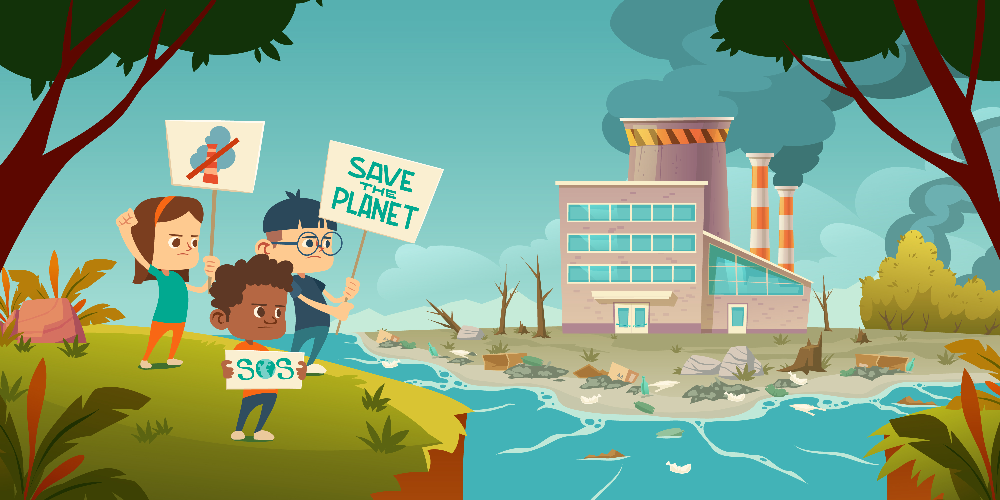

AIQ

Aiq merupakan sebuah website yang dimana pada website ini kalian akan mengetahui bagaimana cara mengelola limbah dengan benar mulai dari limbah organik maupun non-organik. Yukks jangan lupa mampir disini.
Informasi Lainnya
Inilah contoh pembuangan limbah dari suatu pabrik dimana dengan pembuangan limbah ke sungai ini secara sembarangan dapat menyebabkan banyaknya dampak negatif. Mulai dari bau yang menyengat, merusak pemandangan, merusak ekosistem di sungai dan masih banyak lagi. jadi dengan di buatnya website ini bertujuan supaya pemilik pabrik ataupun masyarakat dapat mengetahui bagaimana sih cara mengelola limbah dengan benar supaya tidak menyebabkan pencemaran